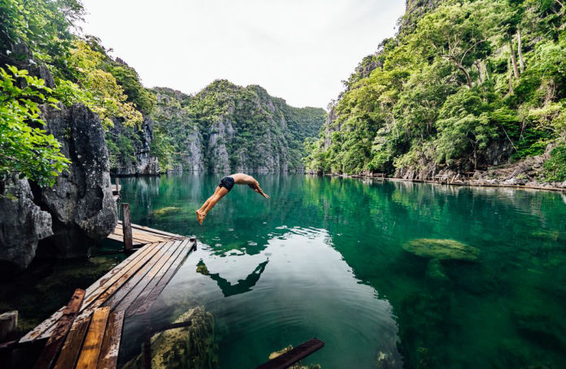

LUZON
The Best Places to visit in Luzon.
September 13, 2019
Bicol
Bicol is a region in the Philippines encompassing the southern part of Luzon Island and nearby island provinces. Caramoan, a peninsula in the east, is dotted with caves, limestone cliffs and white-sand beaches. Nearby, Catanduanes Island has mountains, waterfalls and coral reefs. Donsol, in the west, is home to whale sharks. The region’s active volcanoes include Bulusan Volcano and Mayon Volcano.
September 13, 2019
Tagaytay
Tagaytay is a popular holiday town south of Manila on the Philippine island Luzon. Known for its mild climate, it sits on a ridge above Taal Volcano Island, an active volcano surrounded by Taal Lake. Overlooking the area, People’s Park in the Sky occupies the grounds of a never-finished presidential mansion. Picnic Grove is a recreation area with trails and a zip line.
September 13, 2019
Intramuros
Old-world Intramuros is home to Spanish-era landmarks like Fort Santiago, with a large stone gate and a shrine to national hero José Rizal. The ornate Manila Cathedral houses bronze carvings and stained glass windows, while the San Agustin Church museum has religious artwork and statues. Spanish colonial furniture and art fill Casa Manila museum, and horse-drawn carriages (kalesa) ply the area’s cobblestone streets.
VISAYAS
The Best Places to visit in Visayas.
September 13, 2019
Cambugahay Falls, Siquijor
Siquijor is another Visayan province gaining popularity for its beautiful tourist destinations. Descending 135 steps, you will find the Cambugahay Falls, a three-tier falls with lagoons and a swimming hole known as the Lazi Bay. Its ambiance is perfect, especially for souls who are tired of the city and want to forget problems. Swim in the cool water, jump from the falls, and experience waterfall massage.
September 13, 2019
Boracay (Aklan)
The province of Aklan can never be left out in any Visayas travel itinerary. Its beautiful white sand beaches and memorable sunsets are incomparable, making it a must-visit destination in Visayas. Tourists can do various activities on the island, including island hopping, cliff diving, and trekking. Cap it off by watching the most beautiful sunset.
September 13, 2019
Kansalakan River, Negros Oriental
This river is situated between the Bangwague and Balogo villages in Guihulngan City. The Kansalakan Enchanted River is famous for its emerald green waters that are truly magical to the eyes. This is the perfect tourist destination to unwind in. It is also a good place for swimming and cliff diving. Its prominent feature is the natural circular tub called “The Eye.” The river is open to the public, and no entrance fee is collected.
Mindanao
The Best Thing to do in Mindanao.
September 13, 2019
Tinago Falls
Tinago Falls is a waterfall on the Agus River, located in between the town of Linamon and Iligan City, Lanao del Norte in the northern part of the Philippine island of Mindanao. It is one of the main tourist attractions of Iligan, a city known as the City of Majestic Waterfalls.

September 13, 2019
Coron Island
Coron is the third-largest island in the Calamian Islands in northern Palawan in the Philippines. The island is part of the larger municipality of the same name. It is about 170 nautical miles southwest of Manila and is known for several Japanese shipwrecks of World War II vintage.
September 13, 2019
Siargao
Siargao is a tear-drop shaped island in the Philippine Sea situated 196 kilometers southeast of Tacloban. It has a land area of approximately 437 square kilometres. The east where such Art Skyes coast is relatively straight with one deep inlet, Port Pilar.